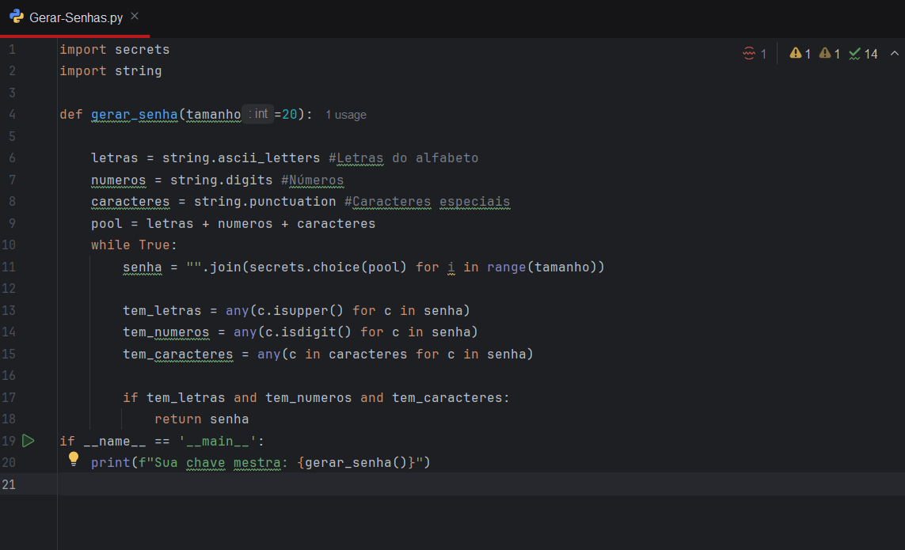

Olá, meu nome é Enzo Lacerda
Sou um estudante de Engenharia de Software entusiasta em Cybersegurança.
Atualmente estou focando em estudar e aprender mais os princípios básicos da cibersegurança, como Redes, Linux, Frameworks, etc.
Sobre Mim
Graduando em Engenharia de Software no iCEV. Meu objetivo acadêmico e profissional é atuar na intersecção entre o desenvolvimento de sistemas robustos e a segurança defensiva e ofensiva (Purple Team).
Tenho interesse em entender como mitigar vulnerabilidades diretamente no código-fonte e gerenciar infraestruturas seguras.
Habilidades
- Linguagens: Python, C
- Sistemas Operacionais: Linux (Endeavour OS, Ubuntu) | Windows
- CyberSecurity: Redes, Wireshark, Fundamentos de Blue Team
- Desenvolvimento Web: HTML5, CSS3, JavaScript, APIs, GitHub, Responsividade
Projetos
Scanner de Portas em Python
Ferramenta desenvolvida para varredura e análise de portas abertas em redes, auxiliando na verificação de segurança de ativos.

> Acessar Repositório no GitHub
Gerador de Senhas em Python
Desenvolvimento de um gerador de senhas utilizando a biblioteca secrets do Python.

> Acessar Repositório no GitHub
Contato
Se quiser trocar uma ideia sobre código ou segurança, me encontre em: